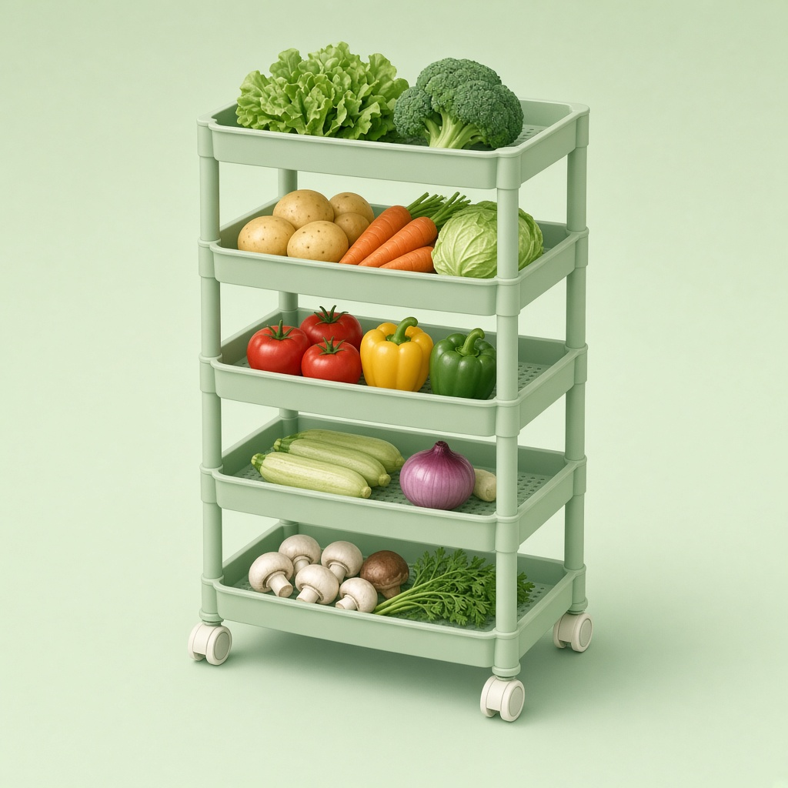

Gambar: ilustrasi, bukan foto produk asli.
Perlengkapan dapurUlasan: Rak Dorong Plastik Dapur Susun 5 Tingkat dengan Roda
Situs ini memuat link afiliasi Shopee; kami bisa mendapat komisi tanpa biaya tambahan untukmu.
| Harga | Rp22.900 |
| Rating | ★ 4.8 / 5 |
| Terjual | 8RB+ |
Data per 25 Okt 2026, bisa berubah. Cek halaman Shopee untuk info terbaru.
Ringkasan
Rak plastik susun 5 tingkat dengan roda untuk dapur, sekitar Rp22.900. Terjual 8RB+ dengan rating 4,8.
Cocok untuk
- Dapur kecil atau kos yang butuh tempat simpan tambahan
- Yang suka menata sayur, bumbu, atau barang kecil
Kelebihan
- Lima tingkat untuk banyak barang
- Ada roda, mudah dipindah
- Harga murah untuk rak 5 tingkat
Perlu diperhatikan
- Bahan plastik; perhatikan batas beban di deskripsi
- Ukuran rak perlu dicocokkan dengan ruang dapurmu
Ulasan ini berdasarkan data produk dan rating pembeli, bukan pengalaman pemakaian pribadi.
Beli di ShopeeCerita singkat (fiksi)
Rak dorong lima tingkat itu bosan diam di pojok. Malam-malam, ia meluncur pelan ke ruang tamu untuk ikut nonton TV. Pagi harinya, ibu kos menemukan bawang merah di depan sofa dan tidak pernah tahu alasannya.